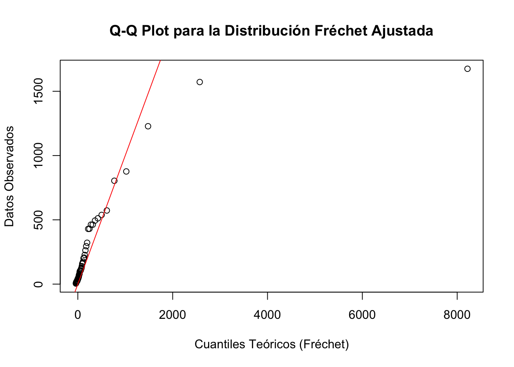

Capítulo 2 La teoría asintótica clásica, las distribuciones extremales y sus dominios de atracción
2.1 Datos extremos
Se dice que tenemos datos extremos cuando cada dato corresponde al máximo o mínimo de varios registros. Ejemplos de este tipo de datos son:
- La máxima altura semanal de la ola en una plataforma marina o portuaria \((m)\).
- La máxima velocidad de viento en determinada dirección a lo largo de un mes \((km/h)\).
- La temperatura ambiental mínima a lo largo de un día \((\dot{C})\).
- La temperatura ambiental mínima a lo largo de un día (\(\dot{C}\))
- La máxima velocidad de tráfico en un enlace de una red de datos de datos en una hora (\(Mb/s\)).
- El mayor registro en un conteo de Coliformes fecales sobre agua costeras al cabo de quince días.
Son un caso particular de evento raro o gran desviación respecto a la media. En resumen, en una gran variedad de dominios disciplinares suele ser de gran interés el trabajo con datos extremos, los que admiten diversos enfoques. Entre ellos, los propios al párrafo anterior (eventos raros, grandes desviaciones), que se verán en el curso. Sin embargo, el comienzo del curso se centra en la teoría más clásica de estadística de datos extremos, basada en el trabajo de Fréchet, Gumbel, Weibull, Fisher, Tippett, Gnedenko, entre otros.
Observación 1: Se recuerda que si \(X\) e \(Y\) son variables aleatorias independientes, cuyas distribuciones son, respectivamente, \(F\) y \(G\), entonces la variable
\[\begin{equation} \max \left( X,Y \right) \tag{2.1} \end{equation}\]
tiene por distribución la función \(H\) definida por
\[\begin{equation} H(t)= F(t)\; G(t) \tag{2.2} \end{equation}\]
Observación 2: En esta parte inicial del curso asumiremos que nuestros datos son \(iid\) (independientes e idénticamente distribuidos, son dos suposiciones juntas). Esta doble suposición suele NO ser realista en aplicaciones concretas (ninguna de sus dos componentes, incluso) pero para comenzar a entender la teoría clásica, la utilizaremos por un tiempo.
Observación 3: Resulta claramente de la Observación 1, que si tenemos datos \(X_1,...,X_n\) \(iid\) con distribución \(F\), entonces
\[\begin{equation} X_n^{\ast}= \max \left( X_1,...,X_n \right) \end{equation}\]
tiene distribución \(F_n^\ast\) dada por
\[\begin{equation} F_n^\ast (t) = F(t)^n \end{equation}\]
Si conocemos la distribución \(F\) conoceríamos la distribución \(F_n^\ast\), pero en algunos casos la lectura que queda registrada es la del dato máximo y no la de cada observación que dio lugar al mismo, por lo que a veces ni siquiera es viable estimar \(F\). Pero aún en los casos en que \(F\) es conocida o estimable, si \(n\) es grande, la fórmula de \(F_n^\ast\) puede resultar prácticamente inmanejable. En una línea de trabajo similar a la que aporta el Teorema Central del Límite en la estadística de valores medios, un teorema nos va a permitir aproximar \(F_n^\ast\) por distribuciones más sencillas. Este es el Teorema de Fischer-Tippet-Gnedenko (FTG) que presentaremos en breve.
Observación 4: Si \(X_1,...,X_n\;\) es \(iid\;\) y definimos \(\;Y_i = -X_i\;\) para todo valor de \(i\), entonces \(Y_1,...,Y_n\;\) es \(iid\;\) y además
\[\begin{equation} min(X_1,...,X_n) = - max(Y_1,...,Y_n) \end{equation}\]
la teoría asintótica de los mínimos de datos \(iid\) se reduce a la de los máximos, razón por la que nos concentramos aquí en estudiar el comportamiento asintótico de los máximos exclusivamente.
2.2 Las distribuciones extremales
Las distribuciones extremales son tres: la distribución de Gumbel, la distribución de Weibull y la distribución de Fréchet. En su versión standard o típica se definen del modo siguiente.
Se dice que una variable tiene distribución de:
-Gumbel si su distribución es
\[\Lambda(x) = e^{\{-e^{-x}\}}\hspace{0.3cm}\text{ para todo }\: x \;\text{real}.\]
-Weibull de orden \(\alpha>0\) si su distribución es
\[\Psi_{\alpha}(x)=\begin{cases} e^{\left\{-(-x)^{\alpha} \right\}} & si\;x<0\\ 1 & \text{en otro caso} \end{cases}\]
-Fréchet de orden \(\alpha>0\) si su distribución es
\[ \Phi_{\alpha}(x)=\begin{cases} e^{\left\{ -x^{-\alpha}\right\}} & si\;x>0\\ 0 & \text{en otro caso} \end{cases} \] Nota: Como los máximos en general son valores grandes, importa particularmente observar el comportamiento de estas distribuciones para \(x\) tendiendo a infinito. El límite es \(1\) como en toda distribución. Pero VA MAS RAPIDO a 1 la Weibull, luego la Gumbel y luego la Fréchet. Esto es indicio que la Fréchet modela datos más extremos, máximos de datos de colas más pesadas que la Gumbel y ésta que la Weibull. Más adelante veremos esto más precisamente. En la Fréchet, la velocidad de convergencia a 1 crece al aumentar el orden. En cambio en la Weibull el orden afecta la velocidad con que va a 0 cuando \(x\) tiende a menos infinito, que crece cuanto mayor el orden. Esto quedará más claro con el Teorema 1 del curso. La visualización de las densidades de cada tipo quizás ayude a comprender mejor los pesos relativos de las colas.

A estas versiones standard se las puede extender agregando un parámetro de recentramiento \((\mu)\) y un parámetro de escala \((\beta)\).
Se dice que \(X\) tiene distribución:
Gumbel : \(\Lambda^{(\mu, \beta)}\) si \(\;X=\mu + \beta Y\;\), donde \(Y\) tiene distribución \(\Lambda\).
Weibull: \(\;\Psi^{(\mu, \beta)}\;\) si \(\;X=\mu + \beta Y\;\), donde \(Y\) tiene distribución \(\Psi_{\alpha}\).
Fréchet: \(\;\Phi^{(\mu, \beta)}\;\) si \(X=\mu + \beta Y\), donde \(Y\) tiene distribución \(\Phi_{\alpha}\).
En general, es en este sentido que diremos que una variable es Gumbel, Weibull o Fréchet (incluyendo recentramiento y reescalamiento), pero en cálculos donde los parámetros \(\mu\) y \(\beta\) no sean relevantes, por simplicidad, usaremos las versiones standard.
El siguiente teorema vincula las distribuciones extremales en sus formatos standard y resulta de gran utilidad práctica sobre todo al hacer tests de ajustes, etc.
Teorema 2.1 (Relaciones entre las versiones standard de las distribuciones extremales) \(X\) tiene distribución \(\Phi_{\alpha}\) \(\Leftrightarrow\) \((-1/X)\) tiene distribución \(\Psi_{\alpha}\) \(\Leftrightarrow\) \(\log(X^{\alpha})\) tiene distribución \(\Lambda\).
Nota: en otros contextos de la Estadística (en particular en alguna rutinas del R), se le llama Weibull a una variable que corresponde a -X, con X Weibull como definimos nosotros.
Observación 5: Recordamos que la función Gamma (\(\Gamma\) ), que extiende a la función factorial (\(\Gamma(n)=n-1!\quad \forall n\) natural) definida por
\[\begin{equation} \Gamma(x)=\int_{0}^{\infty} t^{u-1}e^{-t}dt \end{equation}\]
es una función disponible tanto en el software R como en planillas de cálculo, etc.
Teorema 2.2 (Algunos datos de las distribuciones extremales) Tres partes:
Parte 1
Si \(X\) tiene distribución \(\Lambda^{(\mu,\beta)}\) entonces tiene:
Esperanza: \(E(X) = \mu + \beta\gamma\), donde \(\gamma\) es la constante de Euler-Mascheroni, cuyo valor aproximado es \(0.5772156649\).
Moda: \(\text{moda}(X)=\mu\)
Mediana: \(\text{med}(X)=\mu - \beta \log(\log 2) \approx \mu - 0.36651 \beta\)
Desviación estándar: \(\sigma(X)=\frac{\beta \pi}{\sqrt{6}} \approx 1.2825 \beta\)
Si \(X^+ = \max(X,0)\), entonces \(E(X+k)\) es finito para todo valor de \(k\) natural
Para simular computacionalmente \(X\), se puede tomar \(U\) uniforme en \((0,1)\) y hacer \(X = \mu - \beta \log(-\log U)\).
Parte 2
Si \(X\) tiene distribución \(\Psi^{(\mu, \beta)}\) entonces tiene:
\(E(X)=\mu -\beta \Gamma (1+1/\alpha)\)
\[\begin{equation*}\text{moda}(X) =\begin{cases} \mu & \text{si }\; \alpha \leq 1 \\ \mu-\beta\left\{ \frac{\left( \alpha-1 \right)}{\alpha} \right\}^{1/\alpha} & \text{si }\; \alpha >1 \end{cases}\end{equation*}\]
\(\text{med}(X)=\mu - \beta (\log 2)^{\frac{1}{\alpha}}\)
\(\sigma(X)=\beta\left\{\Gamma\left( 1+\frac{2}{\alpha} \right)-\Gamma\left( 1+\frac{1}{\alpha} \right)^2 \right\}^{1/2}\).
Parte 3
Si \(X\) tiene distribución \(\Phi_{\alpha}^{(\mu, \beta)}\) entonces tiene:
\[\begin{equation*} E(x) = \begin{cases} \mu + \beta\;\Gamma\left( 1-\frac{1}{\alpha} \right) & \text{si } \alpha>1 \\ \infty & \text{en otro caso} \end{cases} \end{equation*}\]
\(\text{moda}(X)=\mu+ \beta\;\left\{ \frac{\alpha}{\left( 1+ \alpha\right)}\right\}^{1/\alpha}\)
\(\text{med}(X)=\mu + \beta \;\left( \log 2 \right)^{\left( -1/\alpha \right)}\)
\[\begin{equation*} \sigma(x) = \begin{cases} \mu + \left| \Gamma \left( 1 - \frac{2}{\alpha} \right) - \Gamma \left( 1 - \frac{1}{\alpha}\right)\right| & \text{si } \; \alpha>2 \\ \infty & \text{si } \; 1<\alpha \leq 2 \end{cases} \end{equation*}\]
Observación 6: El item e) de la Parte 1 es trivialmente cierto para Weibull y tomando en cuenta el item a) de la Parte 3, es claramente falso para Fréchet.
Observación 7: El item f) de la Parte 1 en conjunto con el teorema 2.1 brinda fórmulas sencillas para simular computacionalmente distribuciones Weibull o Fréchet.
Observación 8: Se generaron mil números aleatorios y aplicando el item f) de la Parte 1: se simularon mil variables Gumbel standard \(iid\), calculándose su promedio, su desviación standard empírica y su mediana empírica.
# Fijar semilla para reproducibilidad
set.seed(123)
# Definir parámetros
mu <- 0 # Centro
beta <- 1 # Escala
gamma <- 0.5772156649 # Constante de Euler-Mascheroni
# Número de simulaciones
n <- 1000
# Generar 1000 valores de una variable uniforme en (0,1)
U <- runif(n)
# Simular la variable Gumbel con parámetros (mu, beta)
X_gumbel <- mu - beta * log(-log(U))
# Calcular estadísticas
esperanza <- mu + beta * gamma
moda <- mu
mediana_teorica <- mu - beta * log(log(2))
desviacion_std_teorica <- beta * pi / sqrt(6)
# Calcular estadísticas empíricas
promedio_empirico <- mean(X_gumbel)
desviacion_std_empirica <- sd(X_gumbel)
mediana_empirica <- median(X_gumbel)Los resultados fueron los siguientes:
## ----- Resultados teóricos: -----## Esperanza teórica: 0.5772157## Moda teórica: 0## Mediana teórica: 0.3665129## Desviación estándar teórica: 1.28255## ----- Resultados empíricos (simulación con n = 1000 ): -----## Promedio empírico: 0.5610296## Desviación estándar empírica: 1.261928## Mediana empírica: 0.3376409Observar que los resultados empíricos están cerca del valor esperado, desvío standard y mediana de la Gumbel standard.
A continuación presentaremos el Teorema medular de esta primera parte, expresado de la manera más llana posible. Veremos posteriormente algunos detalles con más cuidado. En particular, veremos que la continuidad de la distribución \(F\) no es una hipótesis real (ni es necesaria ni es suficiente, por eso la entrecomillamos), pero ayuda a visualizar que no vale el teorema para toda distribución \(F\), así como veremos con cierto detalle más adelante…
Teorema 3: de Fischer-Tippet-Gnedenko (FTG)
Si \(X_1,...,X_n\) es \(iid\) con distribución \(F\) ‘continua’, llamamos \(F^{\ast}_n\) a la distribución de \(max(X_1,...,X_n)\) y \(n\) es grande, entonces existen \(\mu\) real y \(\beta > 0\) tales que alguna de las siguientes tres afirmaciones es correcta:
- \(F^{\ast}_n\) se puede aproximar por la distribución de \(\mu+\beta Y\), con \(Y\) variable con distribución \(\Lambda\).
- Existe \(\alpha>0\) tal que \(F_n^{\ast}\) se puede aproximar por la distribución de \(\mu+\beta Y\) con \(Y\) variable con distribución \(\Phi_{\alpha}\).
- Existe \(\alpha>0\) tal que \(F_n^{\ast}\) se puede aproximar por la distribución de \(\mu+\beta Y\) con \(Y\) variable con distribución \(\Phi_{\alpha}\).
Lo anterior equivale a decir que la distribución del máximo de datos continuos e \(iid\), si \(n\) es grande, puede aproximarse por una Gumbel, una Fréchet o una Weibull.
Observación 9: Como veremos con cierto detalle, cuál de las tres aproximaciones es la válida depende de cómo sea la distribución \(F\).
Por ejemplo, veremos que:
- Si \(F\) es normal o exponencial, se aplica a \(F_n^{\ast}\) la aproximación por una Gumbel .
- Si \(F\) es uniforme, vale para \(F_n^{\ast}\) la aproximación por una Weibull.
- Si \(F\) es Cauchy, la aproximación válida para \(F_n^{\ast}\) es por una Fréchet.
Más precisamente, cuál de las tres aproximaciones es la aplicable depende de la cola de \(F\)1.
En concreto, Weibull aparece cuando \(F\) es la distribución de una variable acotada por arriba (como la Uniforme), Gumbel para distribuciones de variables no acotadas por arriba pero con colas muy livianas (caso Exponencial y Normal) y Fréchet para colas pesadas (caso Cauchy). Finalmente, si bien aclaramos que la hipótesis de continuidad de \(F\) no es esencial, veremos que si \(F\) es la distribución Binomial o Poisson, por mencionar dos ejemplos muy conocidos y sencillos, NO se puede aplicar ninguna de las tres aproximaciones anteriores.
Observación 10. Como consecuencia del \(FTG\) si se tienen datos de máximos, las distribuciones extremales son “candidatas” razonables para proponer en un ajuste. Sin embargo no debe pensarse que siempre se va a lograr ajustar a una de las tres distribuciones extremales, ya que hay al menos dos causas evidentes que podrían desbaratar la aplicación del FTG:
Que la cantidad de registros que se consideran al calcular cada máximo no sea suficientemente grande.
Que los registros que se consideran al calcular cada máximo no sean \(iid\)2.
Por consiguiente el \(FTG\) alienta a intentar ajustar datos extremales a una de las tres distribuciones extremales, pero no siempre un tal ajuste dará un resultado afirmativo.
Ejemplo 1. Veamos un ejemplo de ajuste. Los siguientes datos corresponden a los valores, en \(80\) puntos geográficos distintos de la región parisina, del máximo estival del contaminante atmosférico \(O_3\) (no perceptible sensorialmente y con impacto sanitario serio). Cada dato es el máximo registro en cada sensor a lo largo de todo un verano; el contaminante se mide diariamente, por lo cual, cada uno de nuestros \(80\) datos es el máximo de unas \(100\) lecturas diarias.
## [1] "Primeros 6 datos:"## X_i
## 1 430.30
## 2 115.70
## 3 4.48
## 4 26.95
## 5 72.27
## 6 206.40Los valores se miden en unidades de referencia standarizadas que, en particular, permiten comparar las medidas de lugares diferentes, independientemente de variables relevantes como altura e incidencia solar, por trabajo previo de calibración.
El objetivo del estudio en esta etapa es conocer la distribución de estos datos y en particular estimar la probabilidad de que el máximo estival en los 80 puntos supere el valor 50 (correspondiente a existencia de riesgo moderado).
Veamos los datos que tenemos:
## [1] "Cálculo de estadísticos básicos"## Min. 1st Qu. Median Mean 3rd Qu. Max.
## 4.48 23.44 52.77 183.93 166.82 1675.00Como la mayoría de tests de ajustes suponen datos \(iid\), realizaremos dos tests de aleatoriedad3:
- Runs test (Up & Down)
- Spearman correlation of ranks
Para realizar el ajuste utilizaremos el test \(\chi^2\) de ajuste4. Este test requiere elegir una partición más o menos arbitraria de la recta real en intervalos; sin embargo es importante que en cada intervalo caiga una cantidad suficiente de datos de la muestra; en este caso hemos tomado como extremos de los intervalos los quintiles empíricos de nuestra muestra.
Una aclaración mucho más importante es que este test requiere estimar parámetros por el método de Máxima Verosimilitud Categórica, que da resultado distintos al método de Máxima Verosimilitud a secas5.
## Warning: package 'tseries' was built under R version 4.3.3## Registered S3 method overwritten by 'quantmod':
## method from
## as.zoo.data.frame zoo##
## Runs Test
##
## data: as.factor(runs_sequence)
## Standard Normal = 2.4678, p-value = 0.01359
## alternative hypothesis: two.sided##
## Spearman's rank correlation rho
##
## data: data$X_i and seq_along(data$X_i)
## S = 85949, p-value = 0.9483
## alternative hypothesis: true rho is not equal to 0
## sample estimates:
## rho
## -0.007372289Como cada dato de los 80 que disponemos es un máximo de un centenar de observaciones, intentaremos ajustarlos a una distribución extremal sabiendo que no necesariamente tendremos éxito.
Observemos en particular que lo que pasamos por dos tests de aleatoriedad son los 80 máximos, pero no el centenar de lecturas que forman cada uno de los 80 máximos (ni siquiera tenemos esos datos originales).
Dado que visualmente se aprecian valores muy apartados, se presume una distribución de colas pesadas y por ese motivo se intenta un ajuste a una Fréchet.

# Parámetros del libro
loc_libro <- -6.5 # μ
scale_libro <- 44 # β
shape_libro <- 1.04 # α (parámetro de forma positivo, Fréchet)
# Cálculo de la probabilidad de exceder el valor 50
prob_excede_50 <- 1 - pgev(50, loc = loc_libro, scale = scale_libro, shape = shape_libro)
# Mostrar la probabilidad de excedencia
print(paste("Probabilidad de excedencia del nivel 50:", round(prob_excede_50, 4)))## [1] "Probabilidad de excedencia del nivel 50: 0.3575"# Proporción empírica de excedencia del nivel 50
prop_empirica <- mean(data$X_i > 50)
print(paste("Proporción empírica de excedencia del nivel 50:", round(prop_empirica, 4)))## [1] "Proporción empírica de excedencia del nivel 50: 0.5125"# Intervalo de confianza para la proporción empírica
prop_ci <- prop.test(sum(data$X_i > 50), length(data$X_i))$conf.int
print(paste("Intervalo de confianza al 95%:", round(prop_ci[1], 3), "-", round(prop_ci[2], 3)))## [1] "Intervalo de confianza al 95%: 0.399 - 0.625"## [1] "Probabilidad de excedencia del nivel 50: 0.3575"# Parámetros del libro
loc_libro <- -6.5 # μ
scale_libro <- 44 # β
shape_libro <- 1.04 # α (parámetro de forma positivo, Fréchet)
# Cálculo de la probabilidad de exceder el valor 50
prob_excede_50 <- 1 - pgev(50, loc = loc_libro, scale = scale_libro, shape = shape_libro)
print(paste("Probabilidad de excedencia del nivel 50:", round(prob_excede_50, 4)))## [1] "Probabilidad de excedencia del nivel 50: 0.3575"# Parámetros del libro
loc_libro <- -6.5 # μ
scale_libro <- 44 # β
shape_libro <- 1.04 # α (parámetro de forma positivo, Fréchet)
# Definir intervalos usando los quintiles empíricos
breaks <- quantile(data$X_i, probs = seq(0, 1, length.out = 6)) # 5 intervalos
# Calcular las frecuencias observadas en cada intervalo
observed_counts <- hist(data$X_i, breaks = breaks, plot = FALSE)$counts
# Calcular las probabilidades teóricas en cada intervalo usando la distribución Fréchet ajustada
probs <- diff(pgev(breaks, loc = loc_libro, scale = scale_libro, shape = shape_libro))
# Convertir probabilidades en frecuencias esperadas
expected_counts <- probs * length(data$X_i)
# Realizar el test de ajuste Chi-cuadrado
chi_sq_test <- chisq.test(observed_counts, p = probs, rescale.p = TRUE)
# Mostrar los resultados del test
print("Resultados del test Chi-cuadrado con los parámetros del libro:")## [1] "Resultados del test Chi-cuadrado con los parámetros del libro:"##
## Chi-squared test for given probabilities
##
## data: observed_counts
## X-squared = 4.3938, df = 4, p-value = 0.3553

Observación 10. Una distribución \(H\) se dice degenerada si \(H(t)=0 \text{ ó } 1\) para todo valor de \(t\). Representan a variables que no son tales, si la distribución de \(X\) es degenerada, entonces \(X\) es una constante, y no tiene sentido hacer estadística sobre \(X\), por lo tanto sólo tienen interés para nosotros las distribuciones no-degeneradas.
2.3 Distribución Extremal Asintótica
Si \(X_1,...,X_n\) es iid con distribución \(F\) diremos que \(H\) no-degenerada es la Distribución Extremal Asintótica (DEA) de \(F\)6, si existen dos sucesiones de números reales, \(d_n\) y \(c_n>0\), tales que la distribución de \[\begin{equation} \frac{max(X_1,...,X_n)- d_n}{c_n}\;\text{ tiende a } H \text{ cuando } n \text{ tiende a infinito.} \end{equation}\]
2.4 Supremo esencial de una variable aleatoria o distribución
Si \(X\) tiene distribución \(F\), se llama \(M_X\) al supremo esencial de \(X\) o, indistintamente, supremo esencial de \(F\) (denotado \(M_F\)) a
\[\begin{equation} M_X = M_F = \sup\{t \; / \; F(t) < 1\} \end{equation}\]
Observación 11.
- Si \(F\) es \(U(a,b)\), \(M_F=b\).
- Si \(F\) es \(Bin(m,p)\), \(M_F=m\).
- Si \(F\) es Normal, Exponencial, Cauchy o Poisson entonces \(M_F\) es infinito.
Teorema 4: Si \(X_1,...,X_n\) iid con distribución \(F\) cualquiera, entonces, para \(n \rightarrow \infty\),
\[\begin{equation} X_n^{\ast} =max(X_1,...,X_n) \rightarrow M_F \end{equation}\]
Observación 12. El resultado anterior vale incluso si \(M_F\) es infinito, pero si \(M_F\) es finito, como \(Xn* - Mf\) tiende a cero, por analogía con el Teorema Central del Límite para promedios, buscaríamos una sucesión \(c_n>0\) y que tienda a cero de modo tal que \((X_n^{\ast}- M_F )/ c_n\) tienda a una distribución no- degenerada y de allí surge buscar la DEA.
Teorema 5: Si \(F\) es una distribución con \(M_F\) finito, y para \(X\) con distribución \(F\) se cumple que \[\begin{equation} P(X=M_F)>0 \end{equation}\] entonces \(F\) no admite DEA.
Observación 13. Si \(F\) es \(Bin(m,p) \Rightarrow M_F=m\). Si \(X\) tiene distribución \(F\), entonces \(P( X=M_F)= P( X=m)= p^m>0\), asi que la distribucion \(Bin(m,p)\) NO admite DEA, no se puede aproximar la distribución del máximo de una muestra iid de variables \(Bin(m,p)\).
El Teorema anterior es un caso particular del próximo.
Teorema 6: Si \(F\) es una distribución con \(M_F\) finito o infinito que admite DEA, y \(X\) tiene distribución \(F\), entonces el limite cuando \(t\) tiende a \(M_F\) por izquierda de
\[\begin{equation} P(X>t)/P(X \leq t) \end{equation}\]
debe ser 1.
Observación 13. Si \(F\) es una distribución de Poisson de parámetro \(\lambda >0\), \(M_F\) es infinito. Si \(k\) es un natural, entonces
\[\begin{align} P(X>t)/P(X \leq t)& = P(X \leq k+1)/P(X \leq k)\\ & = 1-\left\{ P(X=k)/P(X \leq k) \right\} \approx 1-(1- \lambda/k) \end{align}\]
que tiende a 0 cuando \(k\) tiende a infinito, por lo cual \(F\) NO admite DEA, o sea que no se puede aproximar el máximo de una sucesión iid de variables de Poisson.
Observación 14. El Teorema 6 brinda una condición NECESARIA pero NO SUFICIENTE para DEA. Un ejemplo de ello lo aportó Von Mises, mostrando que la distribución
\[\begin{equation} F(x)= 1- e^{(-x-\sin(x))} \end{equation}\]
cumple con la condicion del Teorema 6 pero no admite DEA. El tema será cerrado al estudiar los dominios de atracción maximal, en breve.
Veamos ahora ejemplos donde la DEA resulta aplicable y que ratifican algunos hechos que anticipáramos.
Observación 15. Si \(F\) es \(U(0,1)\) y consideramos \(X_1,...,X_n\) iid con distribución \(F\), resulta que la distribución de \(n( X_n^{\ast} - 1)\) tiende a \(\Psi_1\) por lo cual la distribución uniforme tiene DEA Weibull.
Observación 16. Si \(F\) es Exponencial de parámetro 1 y consideramos \(X_1,...,X_n\) iid con distribución \(F\), se tiene que la distribución de \(X_n^{\ast} - \log n\) tiende a \(\Lambda\) por lo cual la distribución exponencial tiene DEA Gumbel.
Observación 17. Si \(F\) es \(N(0,1)\) y consideramos \(X_1,...,X_n\) iid con distribución \(F\), definimos la función continua y estrictamente decreciente (para \(u>0\))
\[\begin{equation} g(u)= \frac{e^{-u^2/4\pi}}{u}. \end{equation}\]
Como \(\lim_{u \to 0}\; g(u) \rightarrow \infty\) y \(\lim_{u \to \infty}\; g(u) \rightarrow 0\), para todo natural \(n\) existe un único valor \(u_n\) tal que
\[\begin{equation} g(u_n)=\frac{1}{n} \end{equation}\]
y resulta que \(\frac{u_n}{\sqrt{2\pi} (X_n^{\ast}- u_n /\sqrt 2\pi)} \rightarrow \Lambda\), por lo cual la distribución normal tiene DEA Gumbel.
Observación 18. Si \(F\) es Cauchy standard que se expresa como \(C(0,1)\) y consideramos \(X_1,...,X_n\) iid con distribución \(F\), se tiene que la distribución de \(\pi X_n^{\ast}/n\) tiende a \(F_1\) por lo cual la distribución Cauchy tiene DEA Fréchet.
Los ejemplos anteriores no son sorprendentes, en el sentido que aunque presentamos FTG en una versión simplificada, dicho teorema sugiere que cuando \(F\) admite DEA, la distribución \(H\) deberá ser una distribución extremal. De hecho FTG resulta de combinar dos teoremas, basadas en una nueva definición, la de distribución max-estable.
2.5 Distribución max-estables
Si dada \(F\) distribución, \(X\) con distribución \(F\), \(k\) natural arbitrario y \(X_1,...,X_k\) iid con distribución \(F\), existen reales \(a_k, b_k\) tales que \(max(X_1,...,X_k)\) tiene la misma distribución que \(a_k X+ b_k\), \(F\) se dice max-estable.
El Teorema FTG resulta de superponer los dos siguientes teoremas.
Teorema 7:
Si \(F\) admite DEA \(H\), entonces \(H\) es max-estable.
Si \(H\) es max-estable, es la DEA de sí misma.
Teorema 8:
Una distribución es max-estable si y solo si es extremal: Gumbel, Weibull, Fréchet.
El Teorema 7 es bastante intuitivo y análogo a los teoremas de Lévy sobre distribuciones estables en aproximaciones asintóticas de las distribuciones de sumas. Para el Teorema 8 haremos enseguida un ejercicio sencillo que nos ayudará a hacerlo creíble.
Luego precisaremos, para terminar con esta parte, cómo son las distribuciones que tienen por DEA cada uno de los tres tipos de distribuciones extremales. Para eso precisamos recordar algunas definiciones, como la siguiente.
Observación 19. Si \(F\) y \(G\) son dos distribuciones, tienen colas equivalentes si \(M_F=M_G\) y cuando \(t\) tiende a \(M_F\) por izquierda, \((1-F(t))/(1-G(t))\) tiende a un valor \(c>0\).
Recordando ahora cómo se calcula la distribución del máximo de dos variables independientes, es muy sencillo calcular la distribución del \(max\left\{ X,Y \right\}\), cuando \(X\) e \(Y\) son independientes y cada una de ellas es una distribución extremal. Se tiene el siguiente resultado.
| \(X\) | \(Y\) | \(max(X,Y)\) |
|---|---|---|
2.5.1 Ejemplos de libro
Ejemplos de Coles et al. (2001) con el paquete ismev en R :
2.5.1.1 POT
Figura 2.1: Acumulaciones diarias de lluvia en una ubicación en el suroeste de Inglaterra registradas durante el período 1914-1962.
Considerando la Figura 2.1, podemos definir un evento como extremo si supera un cierto nivel alto, quizás una precipitación diaria de \(30\; mm\) en este caso. Entonces, los valores extremos son ahora aquellas observaciones que superan un cierto umbral alto (Coles et al. (2001)).
References
Los valores de \(F(t)\) para valores grandes de \(t\).↩︎
Al final del capítulo 2 se verá que esto puede subsanarse con versiones más generales del FTG.↩︎
En inglés es randomness.↩︎
Una excelente referencia para la temática de los test \(\chi^2\) de ajuste es la introducción del trabajo Pearsonian Tests and Modifications (Jorge Graneri, CMAT, Facultad de Ciencias, 2002).↩︎
Este hecho es frecuentemente ignorado y presentado erróneamente en los textos y cursos básicos de Estadística.↩︎
De manera equivalente, que \(F\) tiene DEA \(H\).↩︎